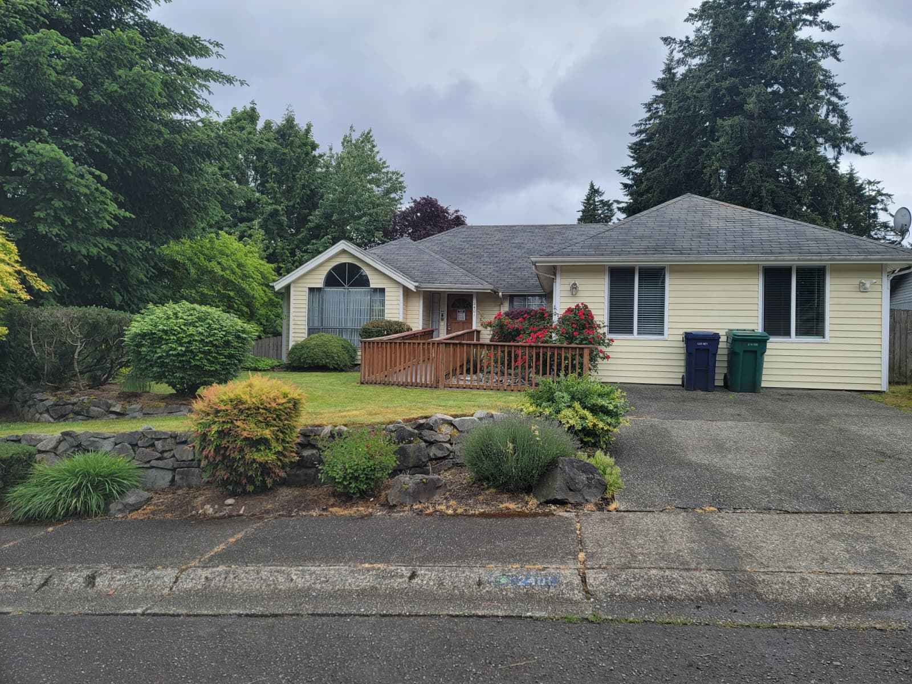
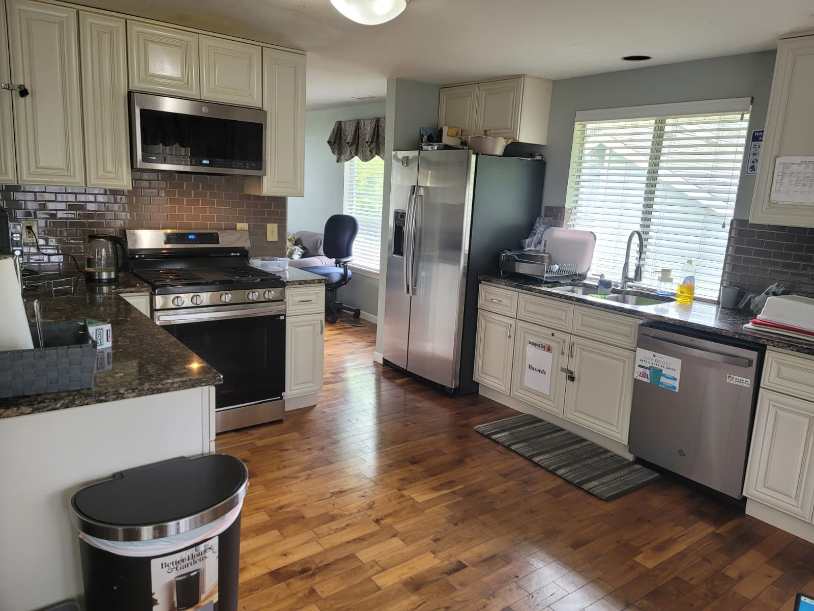

Daily Life
Show morning routines, meals, engagement, quiet time, and evening support.
View Daily LifeACaring Adult Home provides a smaller, family-style residential setting for adults who need supervision, personal care, meals, routines, and a safe place to belong.
Welcoming inquiries from families, guardians, case managers, discharge planners, and placement coordinators.



Contact us to discuss fit, current openings, care needs, and the next steps for a visit or referral.

Families often visit a website because they are trying to decide whether a home feels safe, calm, and trustworthy. The site should answer that question visually and emotionally before they ever call.
Residents are supported by routine, familiarity, and a smaller home setting where individual needs are easier to notice.
Care may include personal care, meals, laundry, medication assistance, reminders, and supervision based on the resident’s care plan.
Families, guardians, and referral partners can reach out to discuss fit, availability, and next steps.
Instead of forcing every visitor through one long page, each area now has its own page with a focused purpose.
Show morning routines, meals, engagement, quiet time, and evening support.
View Daily LifeHelp families quickly understand whether the home may fit their care needs.
View Care FitGive families and referral partners a clear step-by-step path to contact you.
View Admissions